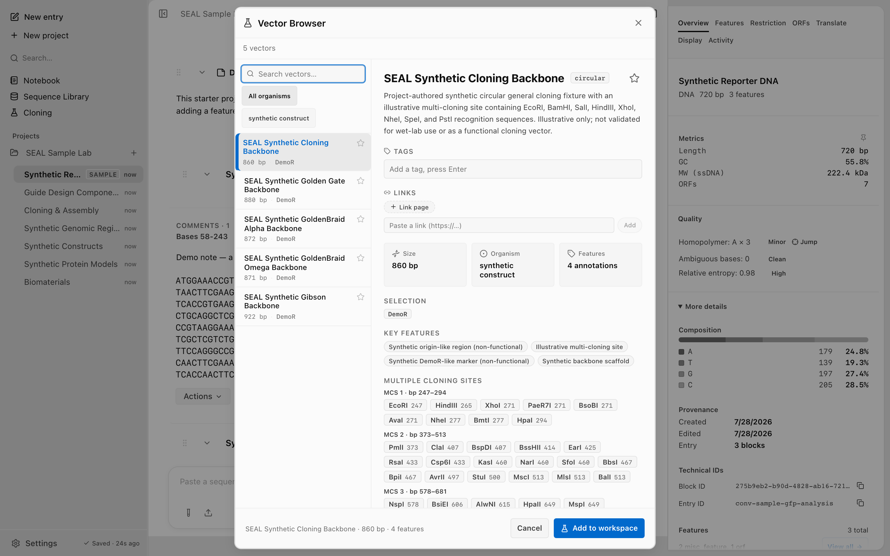

Sequence sources
Screenshots and recordings show the direct edition. Compare editions.
Sequences in SEAL come from project-authored synthetic fixtures, your own files, or an explicit fetch from a public database. This page explains the provenance and network boundary of each source.
The built-in synthetic vector fixtures
SEAL ships five project-authored, deterministic synthetic circular fixtures for software demonstrations. Each record includes illustrative features, topology, and provenance. The desktop Vector Browser and CLI use the same records:
seal vectors list
seal vectors get "SEAL Synthetic Cloning Backbone" --json
seal vectors add "SEAL Synthetic Cloning Backbone"The set contains a general cloning fixture, a Golden Gate fixture, GoldenBraid alpha and omega fixtures, and a Gibson fixture. Each record carries project-authored provenance, a reproducible sequence, annotations, and topology for deterministic UI and automation practice.

Fetch from NCBI
Use seal fetch to retrieve a record from NCBI E-Utilities by accession. It queries the nucleotide database by default and returns GenBank text. Use --format to select FASTA or parsed JSON. The request sends the accession, the SEAL tool identifier, and ordinary network metadata to NCBI. SEAL does not ship a publisher email for these requests. If you choose to configure an optional contact locally, that user-provided contact belongs to your installation and is included only in fetches you start.
seal fetch NM_000518
seal fetch NM_000518 --format fasta
seal fetch NM_000518 --format json
seal fetch U49845 --format jsonFor protein records, pass --db protein. Accessions that begin with NP_, XP_, YP_, WP_, or AP_ are routed to the protein database automatically, even without the flag:
seal fetch NP_001234 --db protein
seal fetch NP_001234
| Flag | Default | Description |
|---|---|---|
<accession> | none | GenBank or RefSeq accession (required). |
--db nuccore|protein | nuccore | NCBI database to query. Auto-detected for known protein prefixes. |
--format genbank|fasta|json | genbank | Output format. JSON parses to accession, name, definition, organism, length, sequence, and db. |
If NCBI returns HTTP 429, you have hit a rate limit: wait and retry. A 400, 404, or empty body means the accession was not found. See the CLI reference for the full fetch entry.
Paste or import your own
Bring your own sequences by importing files or pasting raw text. SEAL reads FASTA, GenBank, and raw sequence, and auto-detects the format. It reads several more formats on import; for the full list, see More formats you can import. In the desktop app you can drag FASTA and GenBank files into the workspace. From the CLI, use import for one or more files; multi-record files (multiple > headers or LOCUS blocks) are split into separate blocks automatically:
seal import plasmid.gb
seal import primers.fa vector.gb insert.faFor supported formats, round-trip behavior, and exporting back out to FASTA, GenBank, and GFF3, see Import and export.
You can also keep a persistent local library of your own named sequences with seal lib, then refer to them by name in other commands. The Sequence Library stores reusable digital records, not physical samples, reagents, lots, or stock:
seal lib add synthetic-insert myseq.fa
seal lib list
seal lib show synthetic-insertWhat touches the network
Reading files, pasting sequences, and browsing the synthetic fixture library are local. NCBI and UniProt fetches use the network only after an explicit action and send the accession or search term plus ordinary request metadata. EBI annotation, hosted protein models, external agents, and Notion diagnostics have separate outbound boundaries. See Privacy for the complete list.